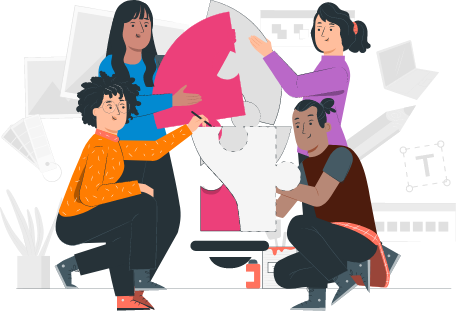

1. Introducción
Actualmente a las comunidades étnicas desde la Constitución Política de Colombia de 1991 se les ha dado un espacio amplio, reconociendo su identidad y derechos. De esta manera pueden también proteger su entorno, sus recursos naturales, sus tradiciones, prácticas y vivencias con la naturaleza, además del aprovechamiento de está.
Como lo relacionan (Acosta Muñoz, Luis Eduardo & Mendoza Hernández, Delio, 2006), las comunidades étnicas son significativas, ya que sus aportes son experiencias históricas y dimensiones de análisis diferentes al enfoque occidental, lo que conlleva a que estas comunidades tengan temáticas en: planificación territorial endógena local y regional (planes de vida); agricultura ecológica; diversidad añadida, espiritualidad y cosmovisión; tecnologías y prácticas agroecológicas milenarias; manutención de los servicios ambientales de los diversos tipos de coberturas vegetales; diversidad de recursos hidrobiológicos que manejan y usan hermandad étnica que trasciende las fronteras de los Estados nacionales. En consecuencia genera nuevos escenarios de cooperación en ciencia y tecnología, por otra parte proyectos de cooperación, entre otros.
Este componente formativo registra información local del territorio mediante formatos donde se tienen en cuenta tipos, parámetros, técnicas de análisis de procesamiento, de comprensión de lectura y métodos de redacción.
El registro y análisis de la información usada en la investigación local de recursos naturales, permite generar procesos de selección, categorización, comparación, validación e interpretación mejorando el proceso de acceso a la misma y a la toma de decisiones.
1. Registro de la información
El programa se ha basado en varios autores que relacionan el registro de información en investigación, entre estos tenemos a Cohen, Néstor & Gómez, Rojas Gabriela (2019), los cuales mencionan que en todo instrumento de registro se expresan las variables asumiendo diferentes formas de interrogación, de aproximación a la realidad, pretendiendo obtener registros u observables que pongan en diálogo al investigador con la realidad en estudio.
Por lo tanto, se construye un instrumento de registro cuando la fuente de información es primaria; por ello, lo asociamos a la interpelación o a la intervención. La elaboración del instrumento de registro no solo es una etapa del proceso de investigación, sino que, principalmente, es un momento de la producción de los datos. Es un recurso del que disponemos en toda investigación social con fuentes primarias para contribuir al pasaje del hecho al dato.
En particular, estos autores indican que la acción de registrar alude a anotar, señalar, inscribir, pero para ello es necesario observar, examinar, atender al fenómeno a ser registrado. El registro resultante es una señal o marca que informa sobre algo que puede pertenecer al ámbito de lo manifiesto, de lo visible o al ámbito de lo oculto, de lo invisible.
1.1 Tipos
Para los tipos de investigación de este programa son varios los autores que han trabajo este tema, como referencia se tiene al investigador Arias Orozco(2012), donde relaciona que en las ciencias sociales se reconocen como paradigmas metodológicos el cuantitativo y el cualitativo, en las ciencias naturales el método de investigación es el experimental. En el paradigma metodológico cuantitativo hay una preocupación por establecer análisis explicativos que puedan a su vez sugerir predicciones frente a tendencias o trayectorias posibles de un fenómeno social y su base de información es producida a través de métodos y técnicas estadísticas, aplicando instrumentos en cantidades significativas de población.
De igual manera (Arias Orozco, Edgar, 2012), menciona que entre tanto el paradigma cualitativo se centra en producir información con un énfasis en la calidad de la misma, en los significados y contenidos que emerjan de las fuentes que en términos representativos no tienen que ser numerosas; en este paradigma el valor de la información no se funda en la cantidad sino en la calidad de información levantada o compilada y en su significación respecto al problema, los objetivos de la investigación. Por ende es importante la interpretación y comprensión de las mentalidades, de las sensibilidades, de los diversos puntos de vista y biografías personales, de las subjetividades y mundos interiores que definen las acciones de los sujetos y marcan los procesos colectivos.
Otros de los investigadores que aplican al programa son Cohen, Néstor & Gómez, Rojas Gabriela (2019), quienes plantean que las investigaciones cualitativas cuya tarea de campo consiste en entrevistas individuales o grupales utilizan instrumentos de registro semiestructurados conocidos como guía de pautas o guía de entrevista, entre otras denominaciones. La flexibilidad de los diseños cualitativos no contiene reglas fijas ni procedimientos únicos para la producción y análisis de datos; sin embargo, no queda librada la tarea de investigación solo al criterio personal, el cual puede basarse en el sentido común, muchas veces alejado del método científico, sino que un amplio conjunto de criterios metodológicos orienta y pautan las decisiones.
Así mismo Arias Orozco (2012), plantea que en la metodología cuantitativa se puede proceder con diferentes métodos como el experimental, la encuesta, técnicas estadísticas de análisis. Mientras en la metodología cualitativa pueden utilizarse métodos como la observación, la narrativa, el análisis del discurso, entre otros. Los métodos no están total y absolutamente establecidos en las ciencias naturales y sociales, son revisables y perfectibles, por eso, aunque no es posible la ciencia sin un método, esto no significa que sea inmodificable e inamovible. El método experimental parte de la experiencia y por tanto el conocimiento científico resulta de la comprobación y verificación experimental de hipótesis; la percepción sensible, la observación, y la experimentación permanente constituyen elementos centrales a este método que pretende alcanzar explicaciones o establecer leyes universales sobre fenómenos naturales y en una perspectiva positivista leyes del mundo social. Se plantea que es posible en un proceso de investigación social articular el paradigma cuantitativo y cualitativo, así como sus métodos, de tal manera que no son excluyentes y teniendo en cuenta que deben aplicarse de manera coherente y pertinente en relación con el problema y los objetivos de investigación, así como en coherencia con sus fundamentos epistemológicos.
1.2 Parámetros de diseño
Teniendo en cuenta las normas APA del año 2020 y enfocándolo a este programa para parámetros de diseño hacia la investigación que se quiere, se debe manejar un plan de estrategias. El diseño que se vaya a implementar debe estar enfocado para recopilar la información que se utilice en la investigación del territorio étnico.
Este programa tendrá que implementar un diseño, donde se tengan recursos necesarios para que se pueda dar cumplimiento al diseño que se quiere implementar en la investigación del territorio.
Por lo que, se organizan los procedimientos y actividades de recolección de los datos de la investigación que se tenga respecto a recursos naturales y su entorno con el territorio étnico. Importante que se tenga claro el diseño que se va implementar para de esta manera poder obtener la información pertinente de la investigación a realizar y los resultados esperados para el programa. Se sugiere seleccionar un diseño que sea práctico y preciso enfocados al objetivo de estudio del programa y de la misma investigación a realizar, por ende que tengan un enfoque cualitativo o cuantitativo.
(Hernández Sampleri, Roberto & Fernández-Collado Carlos & Bapista Lucios Pilar, 2014) relacionan que las investigaciones se originan en ideas. Para una investigación siempre se necesita una idea; todavía no se conoce el subtítulo de una buena idea. Las ideas constituyen el primer acercamiento a la realidad que habrá de investigarse.
Por otra parte Hernández Sampleri, Roberto & Fernández-Collado Carlos & Bapista Lucios Pilar (2014) plantean que en el enfoque cualitativo de la investigación el propósito no es siempre contar con una idea y planteamiento completamente estructurados; pero sí con una idea y visión que conduzca a un punto de partida, en cualquier caso, resulta aconsejable consultar fuentes previas para obtener referencias, aunque finalmente el estudio parta de bases propias y sin establecer alguna creencia preconcebida.
Para las normas APA del año 2020, se menciona que en los trabajos con enfoque cuantitativo el diseño es muy importante. Para el caso cuando se tienen investigaciones de análisis numérico y estadístico de datos, la aplicación del diseño va a garantizar la calidad de la información obtenida en la investigación. De igual manera las normas APA 2020 mencionan que el diseño se debe utilizar con seriedad, es decir, cumplir cada procedimiento de forma aplicada. No obstante, si llegara a presentarse un cambio inesperado de circunstancias que afecten la aplicación del diseño, este debe adecuarse a la nueva situación.
A continuación en la imagen siguiente se muestra los tipos de diseño según las Normas APA, que se tienen en una investigación:
Experimentales: se plantea por las normas APA 2020, que este tipo experimental constituye una manipulación controlada e intencional de unas variables para medir los efectos o resultados de esa operación. Son diseños de investigación que se expresan en la relación de estímulo y respuesta.
No Experimentales: se describe por las normas APA 2020, que estos diseños no hacen manipulación de variables, sino la observación de fenómenos en sus ambientes cotidianos. Eso quiere decir que se fundamentan en la observación sin intervención y, luego, el análisis de los datos observados.
1.3 Procesos de aplicación
Según la Real Academia Española, diseño es la “concepción original de un objeto u obra destinados a la producción en serie”. El proceso es la investigación en acto, es el momento dinámico en el que conviven, confrontan y hacen de la investigación una unidad, la teoría, el método y la realidad de trabajo o base empírica. La Real Academia Española lo define al respecto como “acción de ir hacia adelante”, “transcurso del tiempo” y finalmente Cohen, Néstor & Gómez, Rojas Gabriela (2019) lo plantean como “conjunto de fases sucesivas de un fenómeno natural o de una operación artificial”.
El proceso es el desarrollo del proyecto pero es, además, la instancia que da lugar a la constitución del diseño. Este resulta del proceso, es la estructura que sostuvo a la investigación, permitió la producción y análisis de los datos. Por lo tanto, el diseño queda constituido y puede visibilizarse al finalizar el proceso de la investigación. Así mismo, el proceso es el presente en acto y el diseño resulta de la mirada hacia el pasado, hacia el proceso que fue. El diseño visibiliza la calidad del proceso. Pero proyecto, proceso y diseño son tres instancias, según Cohen, Néstor & Gómez, Rojas Gabriela (2019).
Cuando se afirma que investigar es producir conocimiento, no se está diciendo que ese conocimiento surgirá aleatoriamente ni que las condiciones para su producción son objetivas ni sometidas a criterios de verdad o que las decisiones del investigador son neutrales; por el contrario se afirma que el conocimiento es buscado para resolver un problemacomo lo plantean Cohen, Néstor & Gómez, Rojas Gabriela (2019).
2. Datos
Datos es una categoría relacional aplicada a los resultados de la investigación que se toma, en momentos específicos de la investigación, para proporcionar evidencia de reivindicaciones de conocimiento e interés para los investigadores involucrados. Son recolectados, observados o creados para ser analizados y producir resultados de investigación originales.
Para profundizar en la definición de datos, fuentes y datos de investigación observe el video que se encuentra a continuación
2.1 Análisis e interpretación
Villamizar Figueroa, José (1992) señala que los datos se recolectan y analizan para establecer la verdadera situación actual, controlar, ajustar, inspeccionar y evaluar, analizar y mejorar un proceso. Algunas de las técnicas de análisis son:
Lluvia de ideas: es para Villamizar Figueroa José (1992) una técnica mediante la cual, en forma ordenada, un grupo de personas generan ideas sobre un tema específico y tiene como objeto permitir la creatividad y motivación reciproca entre los miembros de un grupo, desinhibiendo su poder creativo, estableciendo una atmosfera de comunicación y libertad de expresión, además busca ideas nuevas y dinámicas con respecto al caso en estudio.
Hoja de verificación: para Villamizar Figueroa, José (1992) la hoja de verificación es la herramienta más útil para el registro y organización de la información o datos requeridos y su objeto es recolectar y organizar los datos para posterior análisis, reducir riesgos asociados con la toma de decisiones, acelerar la detección y resolución de problemas.
Diagrama de flujo: es la representación gráfica que muestra los pasos secuenciales de un proceso y la relación existente entre ellos. Su objeto es descubrir vacíos que son fuente de problema, simplificar el trabajo, disminuir costos. En su elaboración se debe tener en cuenta la simbología.
Diagrama de Pareto: es una gráfica de barras que representa en forma ordenada los pocos factores vitales y los triviales que inciden en un determinado problema, teniendo en cuenta la frecuencia de ocurrencia de dichos factores en un determinado periodo de tiempo. Su objeto es identificar problemas verdaderamente importantes, fijar prioridades y evitar hacer cosas innecesarias.
Diagrama de Dispersión: representa la relación que existe entre dos variables. En el eje X se ubica la variable causa y en el eje Y la variable considerada como efecto.
Gráfico de desarrollo: es un gráfico lineal que muestra la tendencia o evolución de un proceso, una actividad, un resultado o una situación específica, durante un periodo de tiempo determinado.
Diagrama de Causa Efecto (Espina de pescado): es un diagrama con apariencia de espina de pescado que muestra la relación entre un efecto o un problema y las posibles causas que influyen en él. Sirve para representar visualmente las causas probables del problema o efecto y también analizar y eliminar las causas de un problema o efecto.
Histograma: es una gráfica que permite analizar la distribución de la información o datos de un proceso en contraste con el número de ocurrencias de cada valor. Su objeto es diagnosticar rápidamente la panorámica del comportamiento de un proceso a través del tiempo, mostrar la variación de los datos y analizar los comportamientos de un proceso y los cambios que en él se suceden.
Gráfico de control: es un gráfico que muestra el comportamiento y mantenimiento de un proceso dentro de unos límites estadísticos. Su objetivo es visualizar el comportamiento de un proceso en el tiempo, determinar el estado de control de un proceso, efectuar seguimiento y ajustar un proceso.
Gráficos: son dibujos o representaciones pictóricas de datos, para facilitar la visualización y el entendimiento de una situación. Es recomendable, siempre que sea posible graficar los datos recopilados sobre el caso en estudio, pues las gráficas son instrumentos fundamentales para percibir claramente las necesidades de mejoramiento continuo del trabajo. Los tipos de gráficos son: de línea, barra, circular, banda, radar.
2.2 Técnicas de procesamiento
Procesamiento de datos es la técnica que consiste en la recolección de los datos primarios de entrada, que son evaluados y ordenados, para obtener información útil, que luego serán analizados por el usuario final, para que pueda tomar las decisiones o realizar las acciones que estime conveniente.
Las técnicas de procesamiento que existen son los siguientes:
Proceso Manual: este es el proceso más antiguo e involucra el uso de los recursos humanos, tales como realizar cálculos mentales, registrar datos con lápiz y papel, ordenar y clasificar manualmente. Esto da como resultado un proceso lento y expuesto a generar errores a lo largo de todas las etapas o actividades del ciclo. Finalmente, los resultados se expresan de manera escrita, creando grandes volúmenes de información escrita almacenada. Como ejemplo podemos tener la evaluación académica en un colegio, en donde el profesor registra en forma manual, a lapicero, las notas de evaluación de los alumnos en una tabla llamada registro, para luego obtener los promedios mediante cálculos aritméticos manuales, quedando toda esta información almacenada en su registro.
Proceso Mecánico: considera el uso de máquinas registradoras y calculadoras, como el ábaco y las reglas de cálculo, reemplazando en cierto grado el proceso de cálculo manual. Esto trae como lógica consecuencia el aligeramiento del trabajo en relación al proceso y la reducción de errores, pero mantiene la desventaja del proceso de almacenamiento de toda la información resultante. Ejemplo: Obtener la hora empleando un reloj a cuerda, que es un aparato mecánico, que interiormente tiene una serie de engranajes, que se encuentran debidamente coordinados entre sí y cuyo movimiento hace girar una aguja en forma radial y proporcional al tiempo.
Proceso Electromecánico: en este tipo de proceso, el enlace de información entre los diferentes elementos del tratamiento de información, de almacenamiento y de comunicación, sigue realizándose de una forma manual, pero para realizar cada una de estas tareas se emplean máquinas electromecánicas, con las cuales se obtiene mayor eficiencia. Como ejemplo tenemos las actividades que se realizan con las máquinas perforadoras, que mediante el uso de la energía eléctrica, activará un motor, y el eje de este motor con su adaptador respectivo, permitirá perforar suelos a distintas profundidades. Otros ejemplos: cámara de video, cámara fotográfica, calculadoras, etc.
Procesos Electrónicos: en este tipo de proceso se emplean las computadoras, por lo que la intervención humana no es requerida en cada etapa. Una vez ingresados los datos, el computador efectúa los procesos requeridos automáticamente y emite el resultado deseado. Los procesos son realizados a velocidades increiblemente altas, obteniendo información confiable. Un ejemplo práctico lo tenemos en el empleo de las computadoras personales que se usan en el hogar, para llevar los gastos diarios de la casa, ver recetas de cocina y otros. En el trabajo, donde gracias a la PC (Computadora Personal) permite la redacción de documentos y en la recreación, con el uso de los video juegos, bingos y otros.
Para profundicar los procesos descritos consulte las biblioguías de la biblioteca de la CEPAL (Comisión Económica para América Latina y del Caribe) que se encuentran a continuación.
3. Lectoescritura
Para Montealegre (2006), la adquisición y el dominio de la lectoescritura se han constituido en bases conceptuales determinantes para el desarrollo cultural del individuo. La lectura y la escritura son dos habilidades fundamentales para los seres humanos. La lectoescritura es la habilidad que nos permite plasmar el lenguaje, hacerlo permanente y accesible sin límites. La lectoescritura es la capacidad y habilidad de leer y escribir adecuadamente, constituye un proceso de aprendizaje en el cual los educadores pondrán especial énfasis durante la educación inicial proponiendo a los niños diversas tareas que implican actividades de lectoescritura.
3.1 Técnicas de comprensión
Según el Centro de Estudios Cervantinos (2018), la lectura es considerada como un elemento esencial que todo ser humano debe adquirir para lograr su desarrollo integral. Por tanto, es una herramienta extraordinaria de trabajo intelectual, ya que ubica en acción las funciones mentales agilizando la inteligencia.
Es la capacidad de comprender, valga la redundancia, lo que se está percibiendo a través de la lectura, a fin de poder mejorar el análisis de los textos y poder ejecutar efectivamente las distintas técnicas neurolingüísticas existentes.
Algunas técnicas de comprensión de lectura que identifica el Centro de estudios Cervantinos (2018) son:

Inferencias: una de las más sencillas para mejorar la compresión de la lectura, es en un texto, eliminar algunas palabras claves, y pedir al lector que realice las inferencias correspondientes que considere, a fin de que pueda dar sentido al texto. Esto le permite al lector desarrollar la capacidad de análisis, y a inferir efectivamente.
Parafraseo: leer un texto y con las propias palabras explicar lo que se acaba de leer. La capacidad de análisis de cada sujeto de forma individual, y la comprensión lectora se puede mostrar a través del parafraseo.
Subrayado: permite establecer conexión con los puntos clave del texto, a fin de que sean recordados para su posterior explicación.
Elaboración de mapas semánticos o conceptuales: leer un texto solo en varias ocasiones, y a raíz de lo leído, plasmar las ideas principales en un mapa conceptual. Escribir parte del texto, permite recordarlo de una forma más clara, mientras que hablarlo, lo graba en nuestra mente.
Autocuestionamiento: consiste en que, una vez leído un texto, el lector proceda a realizarse a él mismo una serie de preguntas que garanticen realmente entendió lo leído. Algunas de las preguntas que el lector podría hacerse son, el tema real del texto, el escenario donde se desarrolla el texto, los agentes implicados en el mismo, y a qué conclusión puede llegar tras la lectura del texto.
3.2 Métodos de redacción
En su documento Características de la redacción Marta Lidia Marroquín (2013), expone las seis técnicas básicas de redacción:
Descripción: consiste en pintar con palabras, en caracterizar, en decir cómo es algo o alguien. Debe ser fiel, completa y concisa.
Narración: consiste en decir cómo sucedió algo, en contar, en relatar. Sus características principales son: ser dinámica, atractiva, concreta.
Exposición: consiste en desarrollar una idea o un conjunto de ideas, con el objetivo básico de informar, opinar, criticar, comentar, definir, explicar, interpretar. Debe ser objetiva y exacta.
Argumentación: se distingue de la exposición porque tiene, como objetivo básico, demostrar, comprobar y convencer. Además de ser objetiva y exacta, debe aportar pruebas convincentes de lo que afirma o niega.
Diálogo: consiste en reproducir por escrito la conversación, la entrevista, el interrogatorio. Debe ser natural, ágil, significativo.
Resumen: consiste en reducir a lo esencial el contenido de un texto, una conferencia, etcétera, utilizando el mínimo de palabras. Debe ser coherente, muy breve, preciso.
Osorio, Miguel Ángel. Pedagogía para la participación popular. 1986. Editorial Servicio Nacional de Aprendizaje.
Glosario
Investigación:aunque el término resulte a simple vista como un acto complejo, Vélez S. (2001) lo define de manera sencilla, así plantea que la investigación es el “proceso de conocer la realidad” (p.20).
Justificación:Hernández, (2003), afirma que la justificación es la que “indica el porqué de la investigación exponiendo sus razones”, (p.50).
Estadistica:los investigadores Hernández, (2003), la definen como el “procedimiento para clasificar, calcular, analizar y resumir información numérica que se obtiene de manera sistemática”, (p.495).
Fuentes primarias:“constituyen el objetivo de la investigación bibliográfica en la revisión de la literatura y ofrecen datos de primera mano”, Hernández, et al., (2003, p.70).
Hipotesis:hipótesis. Avila Baray (2006), las define como “se define como una respuesta probable de carácter tentativo a un problema de investigación y que es factible de verificación empírica. La hipótesis expresa la relación entre dos o mas variables que son susceptibles de medición. Una hipótesis planteada correctamente debe poderse verificar o contrastar contra la evidencia empírica”. Por su parte, Hernández, et al., (2003), acotan que las hipótesis son “Explicaciones tentativas del fenómeno investigado que se formulan como proposiciones”, (p.140).
Justificación:Hernández, et al., (2003), afirma que la justificación es la que “indica el porqué de la investigación exponiendo sus razones”, (p.50).
Marco teórico:Hernández, et al., (2003), sugieren que el marco teórico “implica analizar teorías, investigaciones y antecedentes que se consideren válidos para el encuadre del estudio (parafrasear). No es sinónimo de teoría”, (p.64).
Método:Vélez S. (2001), afirma que es el “camino para alcanzar una meta. Sistema de principios (identidad, contradicción, exclusión) y normas (inducción, deducción) de razonamiento para establecer conclusiones en forma objetiva”.
Método científico:para Vélez S. (2001), es el “procedimiento tentativo, verificable, de razonamiento riguroso y observación empírica, utilizado para descubrir nuevos conocimientos a partir de nuestras impresiones, opiniones o conjeturas examinando las mejores evidencias disponibles a favor y en contra de ellas”.
Técnica:Vélez S. (2001), sugiere que la técnica es la “habilidad para hacer alguna cosa y que implica el conocimiento empírico de cómo hacerlas. El técnico provee a la ciencia de instrumentos y comprobaciones y no cesa de formular preguntas al científico”.
Variable:Hernández, et al., (2003), la definen como la “propiedad que tiene una variación que puede medirse u observarse”.
Material complementario
| Nombre del documento o material | Tipo de material | Enlace del recurso |
|---|---|---|
| Van der Hammen, M. C., Frieri, S., Zamora, N. C., & Navarrete, M. P. (2012). Herramientas para la formación en contextos interculturales. Tropenbos Internacional Colombia. | Web | Ver |
| Investigación local medicina tradicional del Vaupés. Servicio Nacional de Aprendizaje SENA. | Video | Ver |
| Investigación local de Lengua Cubeo Piracemo Vaupés. Convenio SENA-TROPENBOS. | Video | Ver |
| Grupos étnicos y sus aportes para proteger el medio ambiente. DAGMA Página Oficial. Un espacio de reflexión en torno al aporte que han hecho en Colombia y en Santiago de Cali los grupos étnicos, comunidades negras e indígenas a la protección y preservación del medio ambiente como derecho fundamental. |
Video | Ver |
| ¿Cómo viven los pueblos indígenas en aislamiento en Colombia? Presidencia de la República - Colombia. | Video | Ver |
| Las comunidades indígenas del amazonas colombiano le apuestan al ecoturismo. | Video | Ver |
Referencias bibliográficas
Acosta Munoz, Luis Eduardo, Mendoza Hernandez Delio, 'El conocimiento tradicional: Clave en la construcción del desarrollo sostenible en la Amazonia colombiana'. En: Colombia Amazónica ISSN: 0120-6222 ed: Editora Guadalupe v.N/A fasc.N/A p.101 - 118 ,2006.
Arias Orozco, Edgar., “Seminario temático sobre procesos de investigación”. Fundación Universitaria Catolica del Norte. 2012. www.ucn.edu.co - Campus Santa Rosa de Osos. Medellín. Antioquia – Colombia.
Ávila Baray, H. L. (2006). Introducción a la metodología de la investigación. Edición electrónica.http://www.eumed.net/libros/2006c/203/
Biblioteca de la CEPAL Comisión Económica para América Latina y del Caribe (2020). Biblioguías.https://biblioguias.cepal.org/gestion-de-datos-de-investigacion
Centro de Estudios Cervantinos(2018). Comprensión lectora.https://www.centroestudioscervantinos.es/comprension-lectora/
Cohen Néstor. Metodología de la investigación, ¿para qué?: la producción de los datos y los diseños /– 1a ed. – Ciudad Autónoma de Buenos Aires: Teseo, 2019. 276 p.; 20 x 13 cm. Editorial Teseo, 2019.
Gil Flores, Javier. Analisis de datos cualitativos. Aplicaciones a la Investigación Educativa, Barcelona.
Hernandez Sampieri, Roberto. Metodología de la investigación. McGraw Hill. 2014. Sexta edición. Mexico D.F. ISBN: 978-1-4562-2396-0
Hernández-Sampieri, R., Fernández-Collado, C. y Baptista-Lucio, P. (2014). Cómo se originan las investigaciones cuantitativas, cualitativas o mixtas. En Metodología de la Investigación (6ª ed., pp. 24-29). México: McGraw-Hill.
Hernández S., R., Fernández C., C. y Baptista L., P. (2003). Metodología de la investigación. México. Editorial McGraw-Hill.
Marroquín Marta Lidia. Características de la redacción. Universidad de San Carlos de Guatemala; [2013].https://investigar1.files.wordpress.com/2010/05/redaccion-caracterc3adsticas-de-la-redaccic3b3n-imprimir-mlmsemana10.docx
Montealegre, Rosalía; Forero, Luz Adriana. Desarrollo de la lectoescritura: adquisición y dominio Acta Colombiana de Psicología, vol. 9, núm. 1, mayo, 2006, pp. 25-40 Universidad Católica de Colombia Bogotá, Colombia.http://www.redalyc.org/articulo.oa?id=79890103
Normas APA.http://normasapa.net/elegir-diseno-de-investigacion/
Real Academia Española.https://dle.rae.es/dise%C3%B1o
Sánchez, C. (26 de mayo de 2020). Manual Normas APA(7ma edición).https://normas-apa.org/descargas/manual-normas-apa-descargar-pdf/
Universidad Centroccidental “Lisandro Alvarado”, Venezuela. Procesamiento de datos.http://www.ucla.edu.ve/dac/Departamentos/coordinaciones/informaticai/documentos/PROCESAMIENTO%20DE%20DATOS.htm
Velez S., C. (2001). Apuntes de metodología de la investigación. Departamento de Ciencias Básicas Universidad EAFIT. Medellín – Antioquia.
Villamizar Figueroa, José. Técnicas básicas para el análisis de datos. Editorial: Servicio Nacional de Aprendizaje (SENA) año 1992. URI : https://hdl.handle.net/11404/1907. Colecciones: Cartillas.https://www.ucn.edu.co/sistema-investigacion/Documents/seminario-tematico.pdf